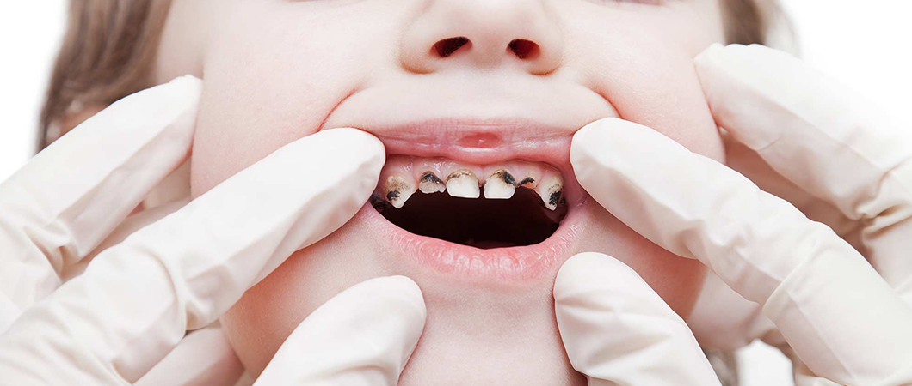
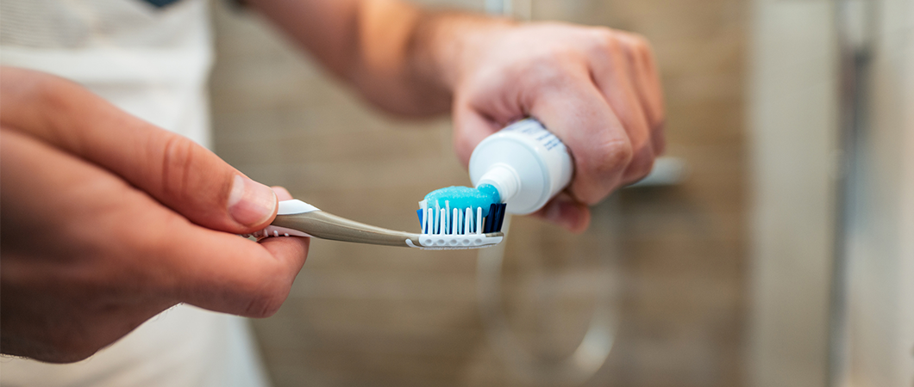
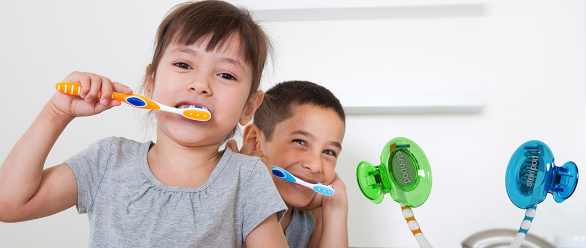
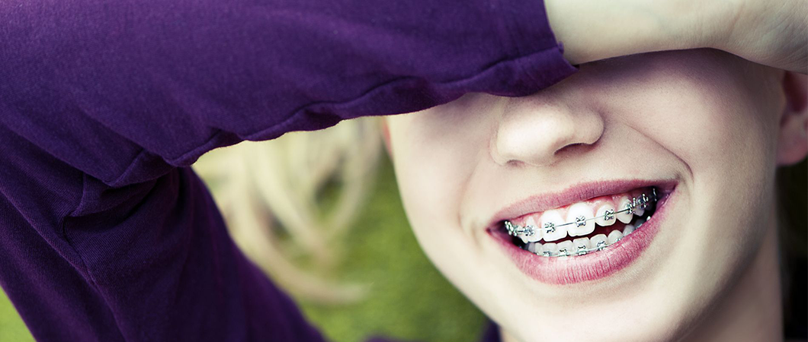
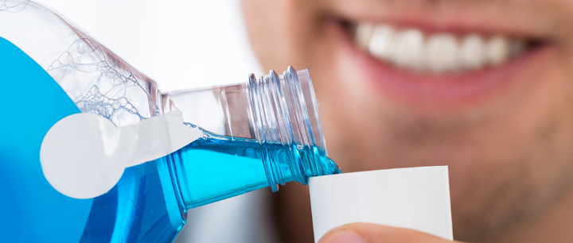
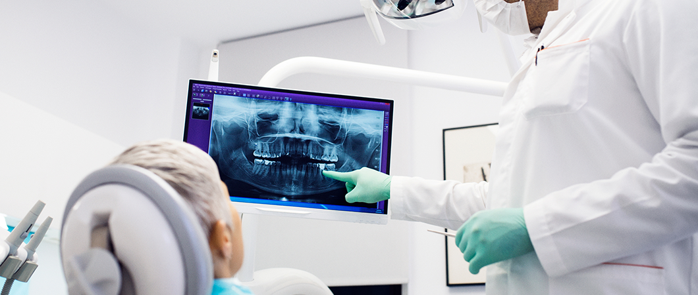

Dental Publications
This article explains the latest dental treatment techniques, and the most successful preventive measures for enjoying strong healthy teeth, in addition to dental implants, dental bridges, orthodontics, and other miscellaneous information

Dental treatment during coronavirus - Turkey
When talking about Coronavirus prevention measures, it became known to be closely related to the respiratory tract and mouth, it is necessary to indicate the possibility of this virus and other harmful viruses and bacteria infection by neglecting oral health and dental treatment.
The mouth is the key to the respiratory tract, and one of the main entrance, it has become known to everyone that the mouth is one of the most important access for Coronavirus to enters the body, so the person can be safe and protected from this novel virus, by maintaining personal hygiene.
Table of contents
- Advice for maintaining oral and dental health
- Dental healthy foods
- What are the most common foods that cause tooth decay?
- How do I know the original and healthy toothpaste appropriate for my teeth?
- How do I choose the right toothbrush?
- Children's toothbrush
- Toothache relievers
- What are the causes of gum bleeding during teeth brushing?
- What is the treatment of tooth sensitivity?
- The oral and dental health of children
- Preventive measures in dental clinics
- What is the appropriate age for orthodontics?
- What are the harms of using charcoal to whiten teeth?
- How is a mouthwash used?
- Symptoms of tooth decay
- The importance of periodic examination of the teeth
Advice for maintaining oral and dental health
The most important things that help in maintaining healthy teeth are:
- Regular cleaning of teeth after every meal and before bed.
- The use of known Mouth wash, not to be continuously used, and can be replaced or dispensed by rinsing the mouth with water and salt, as it is beneficial for the mouth and teeth and is not harmful at all, even in long term.
- Pay attention to healthy and useful food, and avoid harmful foods.
- Reduce the intake of sweets and increase the time interval between meals as much as possible.
You can see the services provided by Ilajak in dental treatment in Turkey
Dental healthy foods
The dentist, "Dr. Nada Al Ashkar recommends, to have healthy food of all kinds, vegetables and fruits, especially those richly containing vitamin C.
For children, they should have an adequate dosage of calcium, which can be obtained from some important foods, such as milk, yogurt, and cheese.
What are the most common foods that cause tooth decay?
Perhaps the most common foods that cause tooth decay are Pastries, Deserts, and Sweets.
Therefore, it is advised to avoid eating them in abundance, and if necessary, nothing wrong with it once a day, while keeping the teeth clean regularly.
See Ilajak’s dental filling services in Turkey

How do I know the original and healthy toothpaste appropriate for my teeth?
All types of toothpaste available in the market are suitable for cleaning teeth, but it is preferred to choose the types of toothpaste approved by the World Dental Federation.
In case of the presence of gingivitis or sensitivity, toothpaste is chosen according to each case depending on the opinion of the dentist.
Read more : Types of tooth decay, its stages and how to treat it

How do I choose the right toothbrush?
Among the most important specifications that must be in a toothbrush:
- The brush has a small tip.
- With straight and not-curly bristles.
- Medium roughness, neither smooth nor rough.
- It is also recommended to change the brush every 3 months.
Children's toothbrush
The dentist "Dr. Nada Al Ashkar” recommends, to accustom children from childhood to use a toothbrush, and to encourage them by choosing an attractive toothbrush, in the form of a doll or a cute curious shape.
Read more : What are gum diseases?

Toothache relievers
Dental pain is one of the most severe and strongest pains in the human body, which compels most people to go for analgesic drugs to reduce pain if it occurs.
Perhaps the best types of pain relievers are Ibuprofen and Diplofen.
It must be taken into account not to exaggerate the intake of large quantities of these analgesics so that the doses do not exceed 3 pills (doses) per day, one pill every 8 hours’ maximum.
Dental analgesics are only a temporary solution. After that, you must visit the dentist and treat the teeth as soon as possible.
Read more : What is a veneer? - Why are veneers cheaper in Turkey?
What are the causes of gum bleeding during teeth brushing?
- There is natural bleeding from the gums that should not cause anxiety, sometimes during brushing the teeth.
- There is abnormal or pathological bleeding, and often the reason behind this is dental plaque (tartar: deposits that accumulate on the teeth and gums due to lack of cleaning, or wrong cleaning for a long time).
Initial treatment comes from home by properly brushing with toothpaste and rinsing with water and salt, in addition to lightly massaging the teeth and gums with the index finger.
Attention must be paid to the correct use of a toothbrush and seeking a visit to the dentist as soon as possible.
What is the treatment of tooth sensitivity?
Teeth sensitivity is caused by problems: Tooth decay, gingival recession, or enamel erosion.
Sensitivity may occur due to taking certain medications, hormonal disorders, or in adolescence. The dentist, Dr. Nada Al Ashkar, recommends using a toothpaste that treats sensitivity while avoiding cold and hot liquids at the same time.
But the best procedure is to check with the dentist's office, apply fluoride to sensitive places, and repeat this procedure after some time again.
Read more : Dental Implant in turkey : How, Advantages and Risks
The oral and dental health of children
Among the most important advice for children, and for parents in the first place:
- Familiarize children with a toothbrush, how to use them as a child, and choose a brush that attracts children to use.
- Pay attention to baby food by increasing fruits and vegetables and foods that contain calcium, which is important for bones, teeth, and the body in general.
- Visit the dentist periodically, especially in the stage of teeth eruption, to avoid any problems before the occurrence, or treat them early if they occur.
Preventive measures in dental clinics
In the current Corona conditions, the warning for gatherings intensifies everywhere, and the current health situation imposed an assertion of some health points that must be listed here:
- It is better not to have more than one patient in the clinic, and to avoid bringing companions, strict and timely coordination is required.
- Sterilization and cleaning of all clinic equipment and tools periodically, especially after each patient.
- Always wear Apron, Gowns, Goggles, and Masks.
- Discard all disposable items after every patient.
- Measuring the patient's temperature before entering the clinic, taking into account the sterilization of the patient's hands at the clinic door.
What is the appropriate age for orthodontics?
In general, the appropriate age for orthodontics is between 12 and 13 years of age, in other words: at the completion or close to the completion of permanent teeth eruption.
In certain cases, such as the protruding of the lower jaw or the protruding of the upper jaw, early intervention is required by the dentist.

What are the harms of using charcoal to whiten teeth?
Dentists do not recommend the use of charcoal for teeth whitening, because it scrapes a layer of tooth enamel, which may cause many problems and severe pain.
How is a mouthwash used?
It is not recommended to use the mouthwash continuously for more than one-week maximum and special cases only, such as gum infections, but it can be replaced with water and salt, which gives the same results and without side effects.

Symptoms of tooth decay
Symptoms of tooth decay are:
- Toothache and sensitivity like pain in teeth while eating.
- Feeling of space within a tooth or between multiple teeth, or food particles stuck in these spaces.
- There is a type of caries called silent caries, and it needs to visit the dentist for follow-up and treatment.
The importance of periodic examination of the teeth
Our teeth are sometimes damaged in a way that we do not know, then the decay and caries surprise us, which could have been easily treated in its early stages if the dentist had been visited periodically in advance.
Therefore, doctors and specialists advise us to visit the doctor periodically every 6 months at least, even if the person does not suffer from symptoms or obvious damage.

Ilajak Medical© | A passion for care
Source : COVID-19
Latest Articles, Health News, Clinical Research, and more.
Keratoconus and cataracts , symptoms and types
What is Keratoconus, How it looks and what are the symptoms? Also, find out Keratoconus’s types and stages , Learn more with ILAJAK Medical.
Best Spa Resorts with Medical Services clinics in Turkey.
In this article, we will learn about the importance of health resorts and the treatment services they offer and the top and famous health & medical resorts in Turkey
Zirconia teeth type and costs in Turkey 2021
Zirconia dental crowns and bridges are used to treat and protect the affected teeth due to decay or fractures, etc, In this article we will learn about the advantages and drawbacks of Zirconia Crowns and bridges
Benefits of porcelain teeth and costs in Turkey 2021
Porcelain crowns and veneers are used to strengthen and protect damaged teeth due to decay or cracks or any other reason. In this article, we will discover dental porcelain and its advantages and risks.